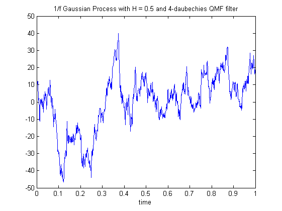
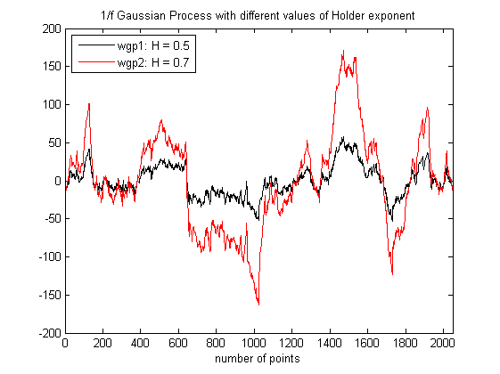
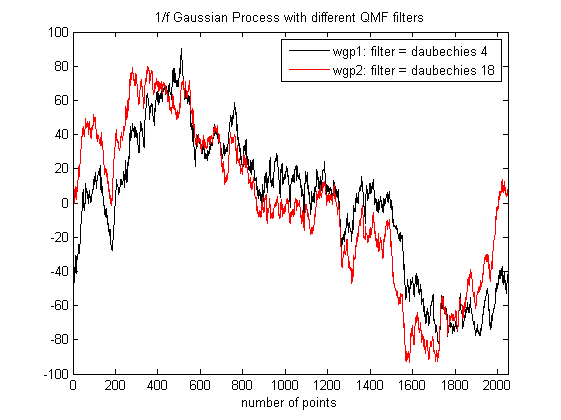
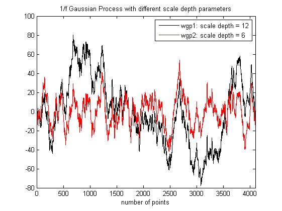

| FRACLAB Functions |
|
Generates a 1/f Gaussian Process using a discrete wavelet transform
WGP = wave1f(N,H,QMF)
WGP = wave1f(...,'Propertyname',Propertyvalue)
WGP = wave1f(N,H,QMF) Generates the 1/f Gaussian process, WGP, using a sample size, N, a Holder exponent, H, and a quadrature mirror filter QMF. The parameter N is a positive integer, the parameter H is a real in (0,1), and the parameter QMF is a real vector.
WGP = wave1f(...,'Propertyname',Propertyvalue) Generates the 1/f Gaussian process, WGP, applying the specified property settings. The property setting can be choosen from the list below :
| Property | Purpose | |
|---|---|---|
| 'scale' |
The WGP is computed using a specific number of scales or octaves, S, which is a positive integer that should not exceed S = log2(N).
| |
| 'seed' |
The WGP is computed with a specific random seed, SEED. This is useful to generate the same path several times or to compare the paths of different WGPs. |
N = 1024; H = 0.5; t = linspace(0,1,N);
QMF = MakeQMF('daubechies',4);
wgp = wave1f(N,H,QMF);
figure; plot(t,wgp);
title('1/f Gaussian Process with H = 0.5 and 4-daubechies QMF filter');
xlabel('time')

N = 2048; H1 = 0.5; H2 = 0.7;
QMF = MakeQMF('daubechies',4);
wgp1 = wave1f(N,H1,QMF,'seed',20);
wgp2 = wave1f(N,H2,QMF,'seed',20);
figure; plot(wgp1,'k'); hold on; plot(wgp2,'r');
legend('wgp1: H = 0.5','wgp2: H = 0.7','Location','NorthWest');
title('1/f Gaussian Process with different values of Holder exponent');
xlabel('number of points');xlim([0 N])

N = 2048; H = 0.5;
QMF1 = MakeQMF('daubechies',4); QMF2 = MakeQMF('daubechies',18);
wgp1 = wave1f(N,H,QMF1,'seed',100);
wgp2 = wave1f(N,H,QMF2,'seed',100);
figure; plot(wgp1,'k'); hold on; plot(wgp2,'r');
legend('wgp1: filter = daubechies 4','wgp2: filter = daubechies 18','Location','NorthEast');
title('1/f Gaussian Process with different QMF filters');
xlabel('number of points');xlim([0 N])

N = 4096; H = 0.5;
QMF = MakeQMF('daubechies',18);
wgp1 = wave1f(N,H,QMF,'seed',300);
wgp2 = wave1f(N,H,QMF,'scale',9,'seed',300);
figure; plot(wgp1,'k'); hold on; plot(wgp2,'r');
legend('wgp1: scale depth = 12','wgp2: scale depth = 6','Location','NorthEast');
title('1/f Gaussian Process with different scale depth parameters');
xlabel('number of points');xlim([0 N])

| |
synth2 | wavereg1d | |